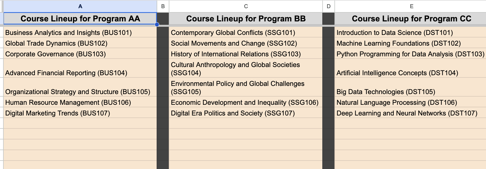
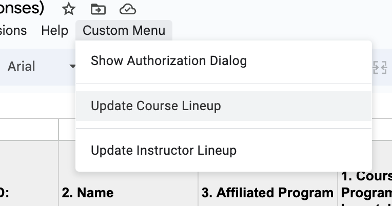
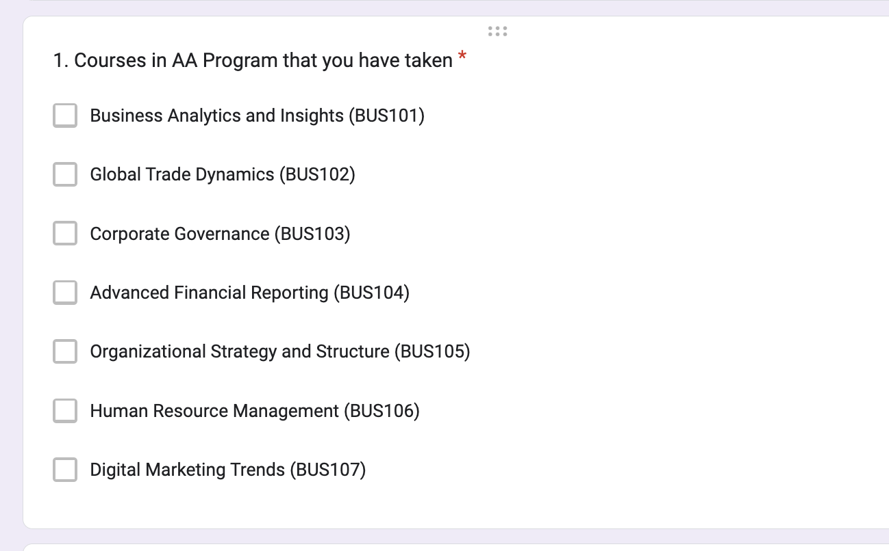
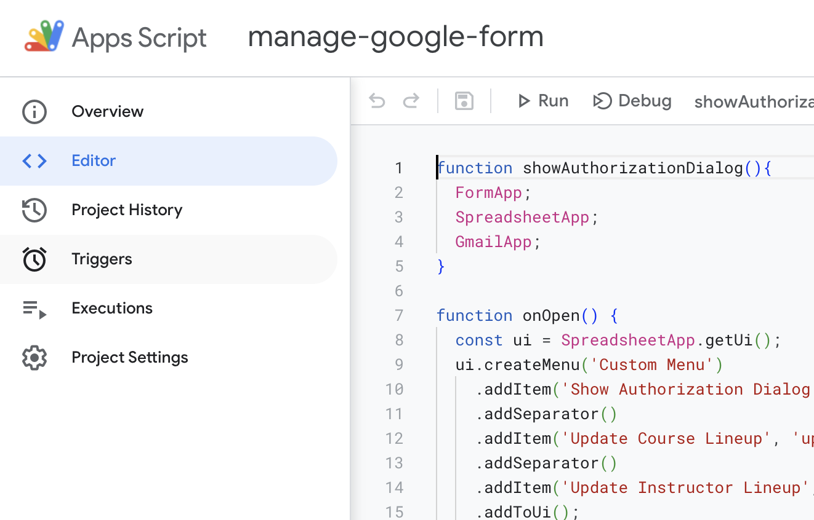
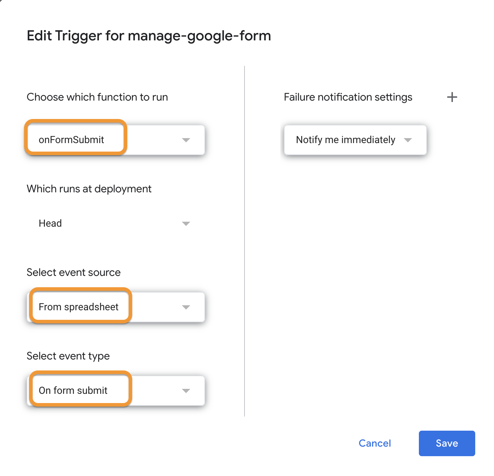
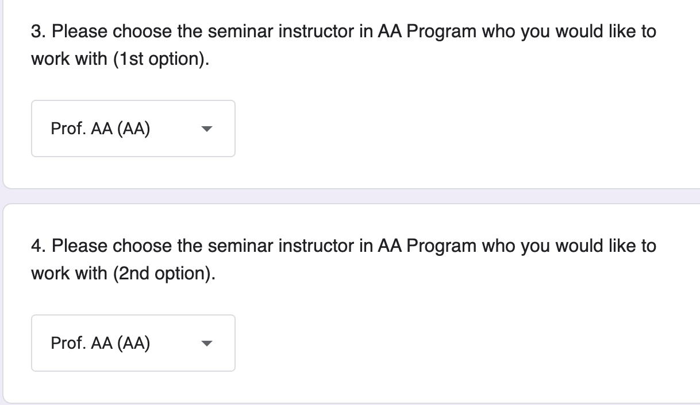
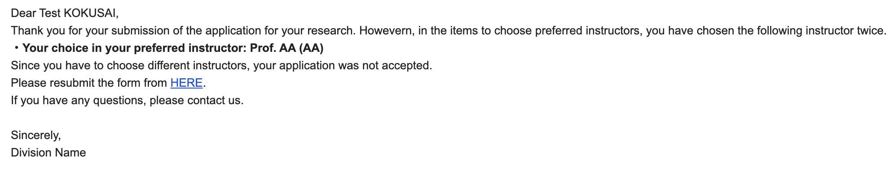

About this Project
This project focuses on automating response management for Google Forms using Google Apps Script. It includes scripts for updating course lineups, managing instructor lists, and processing form submissions to send automated emails. The aim is to simplify and streamline the process of handling form responses in educational or professional environments.
- Response Management: Scripts to automatically update form options based on spreadsheet data.
- Email Automation: Scripts to send notification emails based on form responses.
By automating these tasks, the scripts help in efficiently managing form responses and related communications.
Prerequisites
- A Google account with access to Google Forms, Sheets, and Gmail.
- Basic knowledge of Google Forms and Sheets.
- Familiarity with Google Apps Script and JavaScript.
Sample
Click
HERE to access the Drive folder that includes sample google form and spreadsheet for form responses which includes scripts.
Features
- Dynamic Form Updates: Automatically update form choices based on spreadsheet data.
- Automated Email Notifications: Send custom emails in response to form submissions that meet specific conditions.
- Form Submission Handling: Process form responses to trigger specific actions.
Usage
To effectively use the automated Google Form response management scripts, follow these steps:
-
Pre-define Information in Sheets: Input necessary information in advance in the following sheets:
- 'course-lineup' sheet: Enter course lineup for each program.
- 'instructor-lineup' sheet: Enter instructor lineup for each program.

-
Execute Functions and Update Google Form: Use the 'Update Course Lineup' and 'Update Instructor Lineup' from the Custom Menu to update item options in Google Form. Verify if the target items in the Google Form are updated successfully.
- Update Course Lineup: Synchronize each program's course lineup from the Spreadsheet to the Google Form.
- Update Instructor Lineup: Synchronize each program's instructor lineup from the Spreadsheet to the Google Form.


-
Set Trigger for onFormSubmit: Navigate to 'Triggers' in Apps Script and set a trigger for the 'onFormSubmit' function.


-
Test Form Submission: Ensure that the notification email is sent to respondents when a respondent chooses the same instructor twice.


These steps guide you through setting up and testing the automated response management for your Google Form.
Others
- Customization: Copy relevant files to make your own and adapt the scripts to fit different types of forms and response processing needs.
- Debugging and Maintenance: Regular updates may be necessary to maintain compatibility with Google services.
- Extension: Advanced users can extend the scripts' functionalities by integrating additional Google APIs or adding more complex features.
This project offers a framework for managing Google Form responses efficiently, freeing up time and resources for more critical tasks.